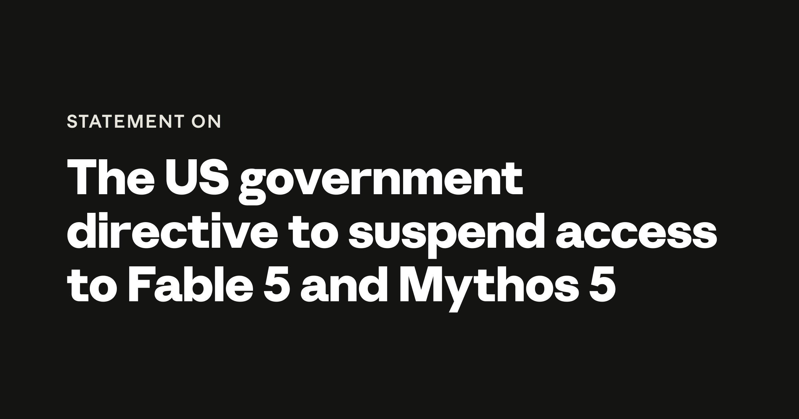

Anthropic 史诗一周：9650 亿美元 IPO 申请与最强模型被政府强制下架

一、导语/摘要
2026 年 6 月第二周，Anthropic 经历了公司创立以来最戏剧性的七天。6 月 1 日，这家由前 OpenAI 研究员创立的 AI 公司向 SEC 秘密提交了 S-1 招股书，估值高达 9650 亿美元，一举超越 OpenAI 的 8520 亿美元估值，成为全球估值最高的 AI 初创公司。然而仅仅 11 天后，6 月 12 日，美国政府直接下令 Anthropic 在全球范围内关闭其最强大的两个模型——Claude Fable 5 和 Claude Mythos 5，理由是"国家安全审查发现潜在 jailbreak 风险"。
更讽刺的是，业内人士普遍认为，正是 Anthropic 自己数月来大肆宣扬 Mythos 5 "过于危险无法公开"的安全营销策略，反而引来了政府的监管利刃。OpenAI CEO Sam Altman 甚至在四月份就预警过这种后果。这家以"安全"为品牌核心的 AI 公司，正在亲身体验安全叙事的反噬效应。
二、背景分析
Anthropic 由 Dario Amodei 和 Daniela Amodei 兄妹于 2021 年创立，核心团队来自 OpenAI 的离职研究人员，分歧点在于 AI 安全理念——他们认为 OpenAI 在安全问题上走得不够远。公司创立初期就确立了"安全优先"的品牌定位，并以此吸引了包括亚马逊、谷歌在内的一系列战略投资。
到 2026 年 5 月，Anthropic 完成了 650 亿美元的 Series H 融资，投后估值达到 9650 亿美元。主要投资者包括 Altimeter Capital、Dragoneer、Greenoaks、Sequoia Capital 等顶级风投，以及亚马逊追加的 50 亿美元战略投资。公司年度经常性收入已突破 470 亿美元，并预计在 2028 年实现盈亏平衡——比 OpenAI 的 2030 年目标提前两年。
与此同时，Anthropic 的模型能力也在急速提升。2026 年 4 月，公司首次预览了 Claude Mythos 5——被内部称为"迄今为止能力最强的 AI 模型"，尤其在软件安全漏洞发现方面展现出前所未有的能力。据公司披露，Mythos 5 在测试中发现了"每一个主流操作系统和网络浏览器的安全漏洞"。由于这项能力过于危险，Anthropic 通过 Project Glasswing 项目，仅将其提供给约 50 家经过严格审查的组织（包括 Amazon、Apple、Google、Microsoft、CrowdStrike）用于防御性网络安全。
三、核心内容
3.1 秘密 IPO 申请：AI 史上最大规模上市
6 月 1 日，Anthropic 向美国证券交易委员会（SEC）秘密提交了 S-1 文件，迈出了 IPO 的第一步。公司 CFO Krishna Rao 在一份声明中表示："这让我们在 SEC 完成审查后拥有了上市的选项。拟议的首次公开发行将取决于市场状况和其他因素。"
此次 IPO 的背景是 2026 年 AI 领域的上市狂潮。高盛预测 2026 年美国 IPO 募集资金可能达到 1600 亿美元——是 2025 年的 4 倍。SpaceX 已在 5 月提交上市申请，目标估值 1.75~2 万亿美元；OpenAI 也在准备秘密上市文件，估值 8520 亿美元。Anthropic、SpaceX、OpenAI 三家合计市值有望在数月内逼近 3 万亿美元。
3.2 Fable 5 发布与政府禁令
6 月 9 日，Anthropic 发布了 Claude Fable 5——Mythos 5 的"安全版"，在网络安全、生物技术等高风险领域设置了严格的护栏。Fable 5 发布后立即成为公开可用的最强 AI 模型（根据 Vals AI 基准测试）。
然而仅仅三天后，6 月 12 日下午 5:21（美东时间），美国政府直接下令 Anthropic 在全球范围内禁用 Fable 5 和 Mythos 5。虽然名义上这是一项"出口管制行动"，限制外国公民访问，但实际上禁令覆盖了所有用户。Anthropic 在 X 平台上发布了合规声明。
政府给出的理由是发现了 Fable 5 的"潜在 narrow jailbreak"：通过特定提示词诱导模型读取特定代码库并识别软件漏洞。然而 Anthropic 强烈反驳称，这一能力"已在其他公开模型（如 OpenAI 的 GPT-5.5）中广泛存在，且被网络安全专业人员常规用于防御目的"。
"我们不同意一个狭窄的潜在 jailbreak 发现应该成为召回一个部署给数亿人的商业模型的理由。如果这个标准在全行业推行，我们认为这将实质上阻止所有前沿模型提供商发布新模型。"
—— Anthropic 官方博客声明

四、各方反应
Sam Altman 的"神预言"
OpenAI CEO Sam Altman 在四月份接受采访时曾精准预见到这一幕。他将 Anthropic 关于 Mythos 5 的宣传称为"恐惧营销"（fear-based marketing），并直言：
"这显然是一个绝妙的营销手段——'我们造了一颗炸弹。我们即将把它扔到你们头上。但我们可以卖给你们一个 1 亿 美元的防弹避难所。'当你花几个月时间告诉全世界你的 AI 独一无二地危险时，全世界——包括美国政府——往往会听进去。"
—— Sam Altman, OpenAI CEO, 2026 年 4 月
亚马逊的角色
据华尔街日报报道，亚马逊 CEO 与美國官员的会谈直接引发了这次对 Anthropic 模型的整治行动。作为 Anthropic 最大的战略投资者（已投入超过 50 亿美元），亚马逊的处境颇为微妙——既是 Anthropic 的"金主"，又是其模型进入政府监管视野的推手之一。
行业连锁反应
事件发生后，多篇分析指出这是一种危险的先例。如果政府可以因为一个"潜在的 narrow jailbreak"就下令召回全球部署的 AI 模型，那么任何发布前沿模型的公司都面临类似的监管风险。这反而可能导致 AI 巨头们更加保守地分享安全相关信息——与监管的本意背道而驰。
五、深度解读
5.1 安全叙事的双刃剑
Anthropic 的困境揭示了 AI 行业一个深层的结构性矛盾：当你把"安全"作为品牌核心，并持续向监管机构强调自己的模型"过于危险"时，监管机构最终会按照你的叙事逻辑采取行动。Anthropic 可能是"安全最佳实践"的受害者——他们的透明度反而害了自己。
相比之下，OpenAI 虽然也面临监管压力（6 月 13 日刚刚被多州总检察长联合调查），但其一贯的"先发布、再修复"策略至少保证了产品在市场上。Anthropic 的处境让人想起"劣币驱逐良币"——做安全合规最认真的玩家，反而承担了最大的合规成本。
5.2 IPO 前景受冲击
此次政府禁令对 Anthropic 的 IPO 前景产生了直接影响。虽然秘密 S-1 文件已提交，但 SEC 审查和市场条件仍存在极大不确定性。分析人士指出，政府强制召回核心产品的能力，可能让潜在投资者重新评估 Anthropic 的风险溢价。公司原计划在 2026 年秋季正式挂牌，但这一时间表现在可能面临延期。
5.3 监管时代的 AI 行业新常态
这一事件标志着 AI 行业进入了一个全新的监管时代。政府在没有任何立法的情况下，仅凭行政命令就能关闭全球部署的 AI 模型——这对整个行业具有深远的示范效应。未来可以预见：
1）AI 公司会更加谨慎地公开模型能力和安全发现
2）"安全营销"策略可能适得其反，公司需要重新思考如何传达安全信息
3）政府与 AI 公司之间的权力格局正在发生根本性转变
5.4 从"安全能否被信任"到"安全能否被承受"
Anthropic 一直主张"安全可以被信任"，并以此吸引了投资者和客户。但本周的事件提出了一個更尖锐的问题：如果一个公司因为做安全而被惩罚，这个行业还能承受得起"真正的安全"吗？如果 Anthropic 这样严格按照安全帧示的公司都面临产品被强制下架的风险，那么其他公司还有什么动力在安全上投入资源？
六、总结
Anthropic 在 2026 年 6 月的经历浓缩了 AI 行业的所有矛盾：万亿市值与合规风险并存，技术创新与安全困境相伴，公众信任与商业利益冲突。这家公司成功说服了资本市场相信它是未来 1 万亿美元市值的候选者，却未能说服政府相信它的模型可以被安全地使用。当"安全"本身成为问题的根源时，整个 AI 行业都需要重新思考：在监管的十字路口，谁能真正定义"安全"的标准？
原文链接：
- Anthropic Files for IPO After $965B Valuation Surpasses OpenAI
- TechCrunch: Anthropic's safety warnings may have just backfired
- WSJ: Amazon CEO's talks triggered crackdown on Anthropic models
- Bloomberg: Anthropic秘密申请上市，估值9650亿美元